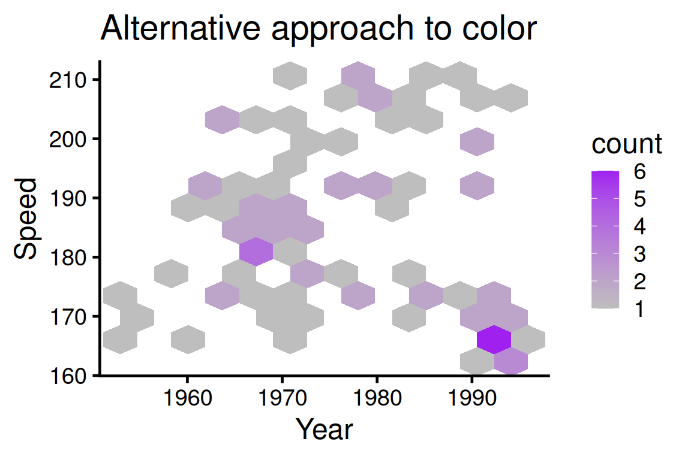

Chapter 10 Two continuous variables
In this chapter, we will look at techniques that explore the relationships between two continuous variables.
10.1 Scatterplot
10.1.1 Basics and implications
For the following example, we use data set SpeedSki.
library(GDAdata)
library(ggplot2)
ggplot(SpeedSki, aes(Year, Speed)) +
geom_point() +
labs(x = "Birth year", y = "Speed achieved (km/hr)") +
ggtitle("Skiers by birth year and speed achieved")In our example, we simply use geom_point on variables Year and Speed to create the scatterplot. we try to capture if there is a relationship between the age of a player and the speed he/she can achieve. From the graph, it seems such relationship does not exist. Overall, scatterplots are very useful in understanding the correlation (or lack thereof) between variables. The scatterplot gives a good idea of whether that relationship is positive or negative and if there’s a correlation. However, don’t mistake correlation in a scatterplot for causation!
10.1.2 Overplotting
In some situations a scatter plot faces the problem of overplotting as there are so many points overlapping. Consider the following example from class. To save time, we randomly sample 20% of the data in advance.
library(dplyr)
library(ggplot2movies)
sample <- slice_sample(movies,prop=0.2)
ggplot(sample,aes(x=votes,y=rating)) +
geom_point() +
theme_classic() +
ggtitle("Votes vs. rating")
To create better visuals, we can use:
Alpha blending -
alpha=...Open circles -
pch=21smaller circles -
size=...orshape="."
library(gridExtra)
f1 <- ggplot(sample,aes(x=votes,y=rating)) +
geom_point(alpha=0.3) +
theme_classic() +
ggtitle("Alpha blending")
f2 <- ggplot(sample,aes(x=votes,y=rating)) +
geom_point(pch = 21) +
theme_classic() +
ggtitle("Open circle")
f3 <- ggplot(sample,aes(x=votes,y=rating)) +
geom_point(size=0.5) +
theme_classic() +
ggtitle("Smaller circle")
grid.arrange(f1, f2, f3,nrow = 3)
Other methods that directly deal with the data:
Randomly sample data - as shown in the first code chunk using
sample_nSubset - split data into bins using
ntile(votes, 10)Remove outliers
Transform to log scale
10.1.3 Interactive scatterplot
You can create an interactive scatterplot using plotly. In the following example, we take 1% of the movie data set to present a better visual. We plotted the votes vs. rating and grouped by the year they are released. In this graph:
You can hover on to the points to see the title of the movie
You can double click on the year legend to look at a certain year
You can zoom into a certain part of the graph to better understand the data points.
10.1.4 Modifications
10.1.4.1 Contour lines
Contour lines give a sense of the density of the data at a glance.
For these contour maps, we will use the SpeedSki dataset.
Contour lines can be added to the plot using geom_density_2d() and contour lines work best when combined with other layers
ggplot(SpeedSki, aes(Year, Speed)) +
geom_density_2d(bins=5) +
geom_point() +
ggtitle("Scatter plot with contour line")
You can use bins to control the number of contour bins.
10.1.4.2 Scatterplot matrices
If you want to compare multiple parameters to each other, consider using a scatterplot matrix. This will allow you to show many comparisons in a compact and efficient manner.
For these scatterplot matrices, we use the movies dataset from the ggplot2movies package.
As a default, the base R plot() function will create a scatterplot matrix when given multiple variables:
sample3 <- slice_sample(movies,prop=0.01) #sample data
splomvar <- sample3 %>%
dplyr::select(length, budget, votes, rating, year)
plot(splomvar)
While this is quite useful for personal exploration of a datset, it is not recommended for presentation purposes. Something called the Hermann grid illusion makes this plot very difficult to examine.
10.2 Heatmaps
10.2.1 Basics and implications
In the following example, we still use the SpeedSki data set.

To create a heatmap, simply substitute geom_point() with geom_bin2d(). Generally, heat maps are like a combination of scatterplots and histograms: they allow you to compare different parameters while also seeing their relative distributions.
10.2.2 Modifications
For the following section, we introduce some variations on heatmaps.
10.2.2.1 Change number of bins / binwidth
By default, geom_bin2d() use 30 bins. Similar to a histogram, we can change the number of bins or binwidth.

Notice we are specifying the binwidth for both x and y axis.
10.2.2.2 Combine with a scatterplot
ggplot(SpeedSki, aes(Year, Speed)) +
geom_bin2d(binwidth = c(10, 10), alpha = .4) +
geom_point(size = 2) +
ggtitle("Combined with scatterplot")
10.2.2.3 Change color scale
You can change the continuous scale of color
ggplot(SpeedSki, aes(Year, Speed)) +
geom_bin2d() +
ggtitle("Changing color scale") +
scale_fill_viridis_c()
10.2.2.5 Alternative approach to color
If you look at all the previous examples, you might notice that lighter points corresponds to more clustered points, which is somewhat counter-intuitive. The following exmaple suggest an alternative approach in color scale.
ggplot(SpeedSki, aes(Year, Speed)) +
geom_hex(bins=12) +
scale_fill_gradient(low = "grey", high = "purple") +
theme_classic(18) +
ggtitle("Alternative approach to color")